Héritage GO
Héritage GO
Core
Héritage GOHeritage Go is a social networking service dedicated to cultural and historical heritages, developed by the non-profit organization Heritage Observatory. Héritage GO displays old photographs of heritages around you, wherever you are in the world. There are more than 450,000 old photographs worldwide. Heritage Go: https://www.heritagego.org/ Heritage Observatory: https://www.heobs.org/ |
|
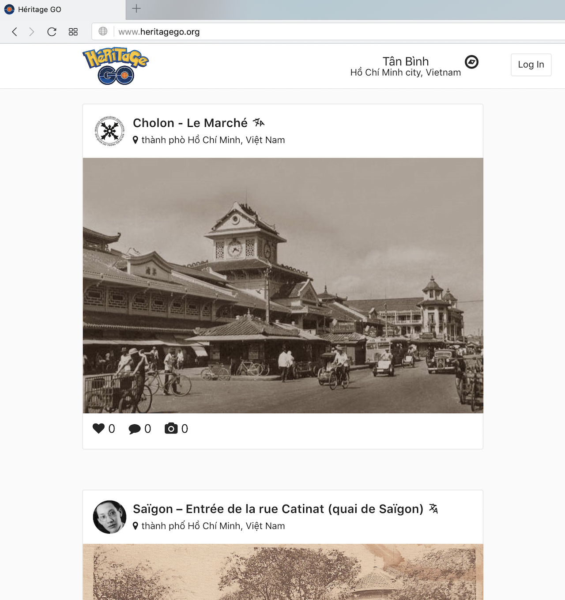
|
FundamentalsThis project will teach you the fundamentals of frontend development using Hypertext Markup Language (HTML), Cascading Style Sheets (CSS), and JavaScript. Fundamentals of frontend development: https://www.youtube.com/watch?v=8gNrZ4lAnAw |
Waypoint 1: Basic HTML PageWe start with a minimal HTML page index.html: https://developer.mozilla.org/en-US/docs/Learn/HTML/Introduction_to_HTML/Getting_started <!DOCTYPE html> <html lang="en"> <head> <meta http-equiv="X-UA-Compatible" content="ie=edge" /> <meta name="viewport" content="width=device-width, initial-scale=1.0" /> <title>Héritage GO</title> </head> <body></body> </html> We have defined "Héritage GO" as the document's title that is shown in a browser's title bar or a page's tab. We will see later what the other HTML elements, defined in this document, correspond to. You can open with your favorite browser the Document Title : https://developer.mozilla.org/en-US/docs/Web/HTML/Element/title |
|
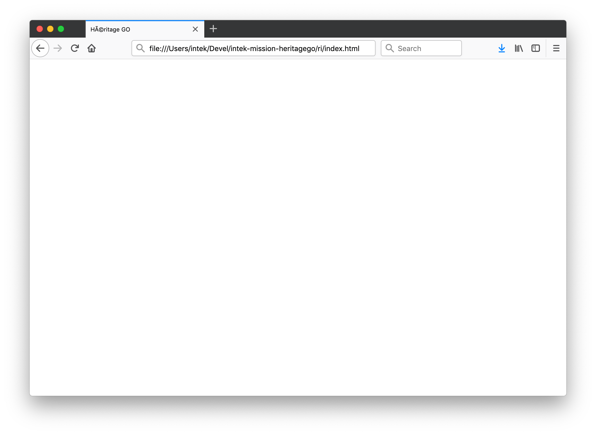
|
Character Encoding IssueYou will already notice that the title "Hérigate GO" displayed in the tab of your browser has character encoding issue. We will be fixing that in the moment. Character Encoding Issue : http://kunststube.net/encoding/ |
|
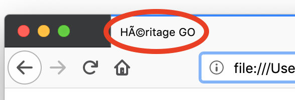
|
Waypoint 2: Specify Character EncodingOur Web page will display English, French, and Vietnamese characters. Characters are encoded using a particular repertoire of characters. By the past, there were many ways to encode Vietnamese characters, such as VSCII, VISCII, VNI, VPS. All these character encodings were incompatible, resulting to Vietnamese mojibake, for instance, when opening a document encoded with VPS while we were using a VNI font. We use nowadays Unicode to encode almost every international character. It replaces all the previous deprecated Vietnamese character encodings. This a MUST HAVE. We need to declare the character encoding used for the HTML document. We should always use the UTF-8 character encoding. Declare the webpage as using the character encoding UTF-8: You can now reload your Encoded: https://www.w3.org/International/questions/qa-what-is-encoding VISCII: https://en.wikipedia.org/wiki/VSCII VNI: https://en.wikipedia.org/wiki/VNI#VNI_Encoding VPS: https://en.wikipedia.org/wiki/Vietnamese_Professionals_Society mojibake:https://en.wikipedia.org/wiki/Mojibake Unicode:https://www.w3.org/International/articles/definitions-characters/ Must Have: http://tinyurl.com/h8yg9d7 character encoding:https://www.w3.org/International/questions/qa-html-encoding-declarations UTF-8 : https://en.wikipedia.org/wiki/UTF-8 Declare the webpage: https://www.w3schools.com/tags/att_meta_charset.asp |
|
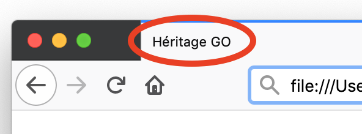
|
Waypoint 3: Define Web Page DescriptionWe need to add a description to this Web page. A meta description is an HTML attribute that provides a brief summary of a web page. It is typically up to 160 characters long. Search engines such as Google often display the meta description in search results where they can highly influence user click-through rates. Add the content "Héritage GO is the community for heritage lovers." in a meta description of this Web page. Meta Description: http://tinyurl.com/y4zy65pm |
Waypoint 4: Add Web Page Favorite IconA favicon (short for favorite icon) is a graphic image associated with a particular Web page or website. This little 16×16 pixels icon is displayed in the tab on the web browser. favicon: https://en.wikipedia.org/wiki/Favicon For example: |
|
|
FaviconIt's not required that you use a favicon, but it can be very good for branding purposes and to ensure people recognize your site across the web. Adding a favicon to your Website is theoretically quite simple, however, in order to support most browsers and platforms, you need to add and reference a lof of icons of different sizes. It's a mess! Hopefully, you don't need to manually generate all these icons and HTML code. There are a few generators that you can find online that will do the job for you. Generate the favicons of your Web site using the image You will have to trick a little bit your HTML code to get the favicon displayed properly. Update the attributes href="./favicon-16x16.png"> The reason is that your browser is reading a local file stored in your computer, not on the Internet. The character Works better, right? Adding a favicon to your Website: http://tinyurl.com/y4kpuja5 Icons of Different sizes: https://realfavicongenerator.net/faq#.XIxovRMzbOQ Reasons for mess: https://realfavicongenerator.net/blog/favicon-why-youre-doing-it-wrong/ Favicon Generator :https://realfavicongenerator.net/ |
|
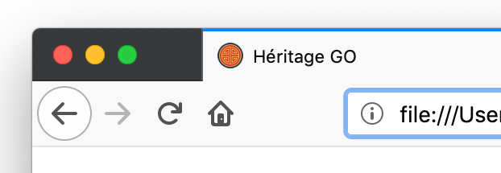
|
Waypoint 5: Define Header HTML Element StructureLet's start designing the layout of our Web page! The header section of the Héritage GO Web page is horizontally composed of:
Update your HTML code to add these elements following these specifications: |
|
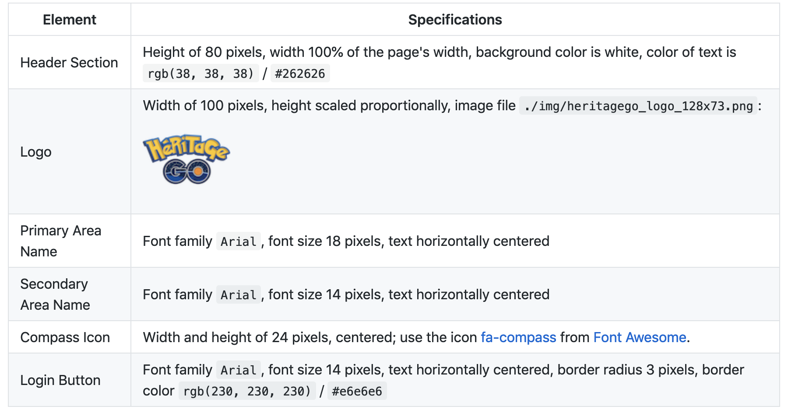
|
Blocks, Elements and Modifiers (BEM)You MUST use the Blocks, Elements and Modifiers (BEM) naming convention to identify HTML Classes. BEM is a methodology that helps you to create reusable components and code sharing in front-end development. Don't worry from now about the exact positioning of your HTML elements on the page. We will fix this in the next waypoint. BEM : http://getbem.com/introduction/ HTML Classes: https://developer.mozilla.org/en-US/docs/Web/HTML/Global_attributes/class BEM101: https://css-tricks.com/bem-101/ |
|
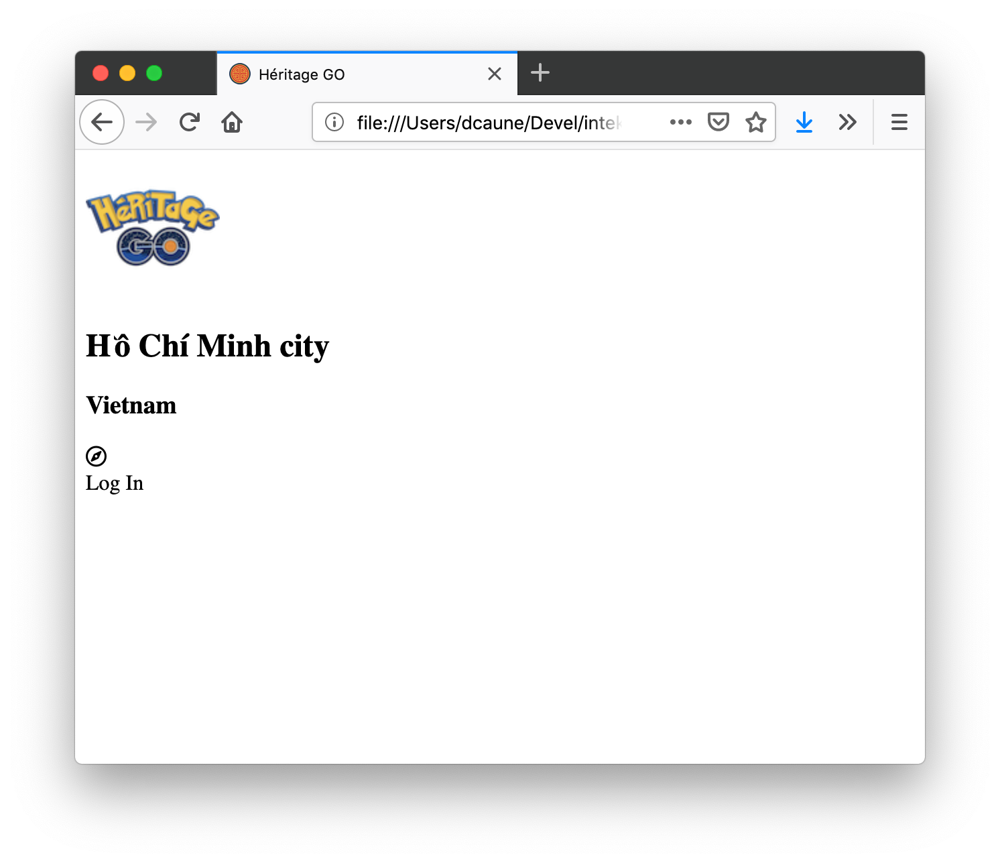
|
Waypoint 6: Position Header HTML ElementsWe are going to position and align the header's HTML elements as follows: |
|
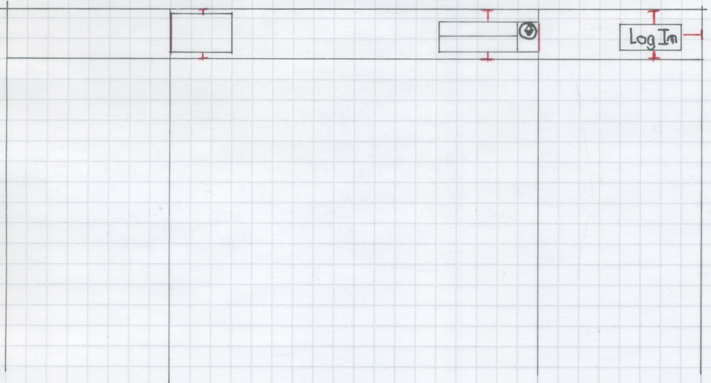
|
CSSThis is what Cascading Style Sheet (CSS) is for. CSS is a language that describes the style of an HTML document, how HTML elements should be displayed. Create a file <link rel="stylesheet" href="./css/main.css" /> The photograph feed section is displayed in the body of the HTML page. The content of this feed section is centered. It has a fixed width of 600 pixels. CSS: https://developer.mozilla.org/en-US/docs/Web/CSS Linking with HTML: https://developer.mozilla.org/en-US/docs/Web/HTML/Element/link Update the HTML code and edit the CSS code to add these following requirements: |
|
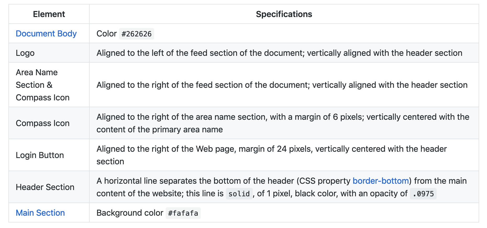
|
FlexboxTo align HTML elements of the header section, you need to use CSS Flexible Box Module, or flexbox for short. Flexbox is one of the two modern layout systems, along with CSS Grid. Flexbox makes layouts flexible and intuitive. You will many comprehensive guides to CSS flexbox layout such like this one, along with the more complete sW3C Candidate Recommendation. You can even experiment flexbox with this Flexbox Playground. Flexbox: http://tinyurl.com/yb56hmug Flexible Layout: https://medium.freecodecamp.org/an-animated-guide-to-flexbox-d280cf6afc35 Layout Module: https://css-tricks.com/snippets/css/a-guide-to-flexbox/ W3C Candidate Recommendation: https://www.w3.org/TR/css-flexbox/ Flexbox Playground: http://tinyurl.com/jtkm2be https://www.w3schools.com/css/css3_flexbox.asp https://css-tricks.com/autoprefixer/" |
|
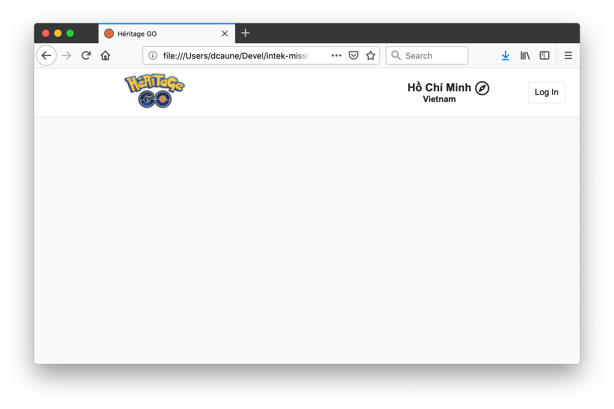
|
Waypoint 7: Logo Scaling with TransitionWe would like to get the website's logo image bigger when the user moves the mouse over. The size of the logo needs to increase when the user hovers over the logo image with the mouse pointer, and it needs to get back to his normal size when the user moves the mouse out of the logo image. This can be easily done using:
Update your CSS file The origin of the transformation needs to be the center of the logo image. The time of each transition animation needs to take 100 ms to complete. The transition needs to start quickly, and decelerates gradually until the end. You need to use the CSS timing function CSS pseudo-class CSS transform: https://developer.mozilla.org/en-US/docs/Web/CSS/transform CSS transitions - Smooth: https://developer.mozilla.org/en-US/docs/Web/CSS/CSS_Transitions CSS- scale: https://developer.mozilla.org/en-US/docs/Web/CSS/transform-function/scale Different Transitions: https://css-tricks.com/different-transitions-for-hover-on-hover-off/ Transform Origin: https://developer.mozilla.org/en-US/docs/Web/CSS/transform-origin Transition Duration: https://developer.mozilla.org/en-US/docs/Web/CSS/transition-duration Easing: https://developers.google.com/web/fundamentals/design-and-ux/animations/the-basics-of-easing Transition Timing Function: https://developer.mozilla.org/en-US/docs/Web/CSS/transition-timing-function CSS-ease out: https://css-tricks.com/ease-out-in-ease-in-out/ The correct final animation of the logo image is the following: |
|
|
Smooth TransitionThe following animation of the logo image is missing the smooth transition back to the normal size of the logo image: |
|
|
WarningWhen CSS3 became popular, all sorts of new features started appearing. Unfortunately, not all of them were supported across all browsers. Vendor prefixes helped developers use those new features, and have them supported instantly without having to wait for each of them to become available for every browser. A good way to check which property is available to use without a vendor prefix is by checking the CanIUse service. There you can see which browser currently supports which property. CanIUse: https://caniuse.com/ https://dzone.com/articles/understanding-css-vendor-prefixes |
Waypoint 8: Spin Compass Icon AroundThe compass icon is used to indicate that the Web application doesn't know precisely where the user is currently located. The human brain is hardwired to pay attention to moving objects. We would like to animate the compass icon to draw the user's attention to it. The user would then click on the compass icon to request the Web application to geolocate him more accurately. We will see later, in this mission, how to accurately geolocate the user. For now, let's animate the compass icon. We would like to spin it around (like a record), for ever. This is what CSS transitions and CSS animation are used for. A CSS transition lets you create gradual transitions between the values of specific CSS properties. The behavior of these transitions can be controlled by specifying their timing function, duration, and other attributes. A CSS animation allows to animate transitions from one CSS style configuration to another. It consists of two components, a style describing the CSS animation and a set of keyframes that indicate the start and end states of the animation’s style, as well as possible intermediate waypoints. Spinning the compass icon is quite easy. We simply need to define a transition of 360 degrees, and include this transition in an CSS animation statement composed of only one waypoint. Then we add the corresponding CSS class to the compass icon's HTML element. The result is the following animation: CSS transitions: https://developer.mozilla.org/en-US/docs/Web/CSS/CSS_Transitions CSS animation: https://developer.mozilla.org/en-US/docs/Web/CSS/CSS_Animations transitions: https://developer.mozilla.org/en-US/docs/Web/CSS/CSS_Transitions keyframes: https://developer.mozilla.org/en-US/docs/Web/CSS/@keyframes |
|
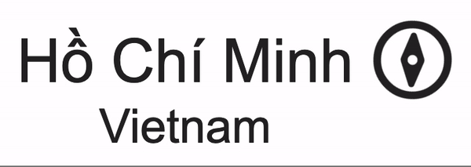
|
UpdateUpdate your |
Waypoint 9: Define Header Responsive LayoutResponsive Web design (RWD) is an approach to Web design that automatically resize, hide, shrink, or enlarge, the content of a Web page, to make it look good on all devices (desktop, tablet, mobile phone). We need to update the CSS code of our web page so that when the user shrinks the width of his browser, the web page adjusts the position of the login button, of the location area, and the logo image:
Responsive web design(RWD): https://en.wikipedia.org/wiki/Responsive_web_design RWD Basics : https://developers.google.com/web/fundamentals/design-and-ux/responsive/ RWD Fundamentals: https://www.udacity.com/course/responsive-web-design-fundamentals--ud893 The page should appear this way on a mobile phone: |
|
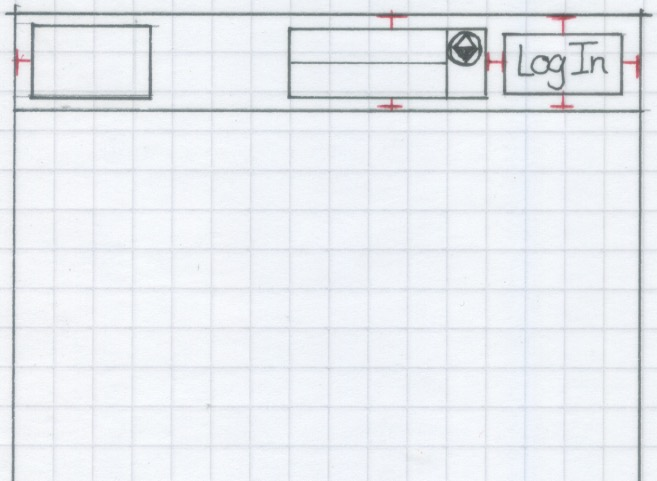
|
UpdateUpdate the HTML code and create the CSS code to add these following requirements when the size of the screen is under 600 px: |
|
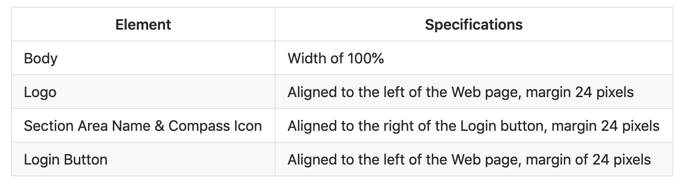
|
End resultThe end result should be similar to the following: |
|
|
Waypoint 10: Integrate Héritage GO RESTful API JavaScript LibraryIn the next waypoints, we will need to fetch photograph data from both Héritage GO and Heritage Observatory's RESTful API servers to render the feed with photograph posts. We provide the JavaScript file This script relies on a fast, small, and feature-rich JavaScript library: jQuery. It makes things like HTML document traversal and manipulation, event handling, animation, and Ajax much simpler with an easy-to-use API that works across a multitude of browsers. To include this JavaScript library, you can download file <script src="js/jquery-3.2.1.min.js"></script> Note: as Google HTML/CSS Style Guide indicates, do not use A better way is to reference this file hosted in a Content Delivery Network (CDN). For example: <script src="https://code.jquery.com/jquery-3.3.1.min.js" integrity="sha384-tsQFqpEReu7ZLhBV2VZlAu7zcOV+rXbYlF2cqB8txI/8aZajjp4Bqd+V6D5IgvKT" crossorigin="anonymous"> </script The attribute You may have noticed the third attribute Note:
if a script writes page content, it should be placed in the body
section. When you place scripts above the body HTML, the JavaScript
files need to be downloaded before anything starts to render on the
page. Therefore it is generally a good idea to place scripts at the bottom of the <script src="https://code.jquery.com/jquery-3.3.1.min.js" integrity="sha384-tsQFqpEReu7ZLhBV2VZlAu7zcOV+rXbYlF2cqB8txI/8aZajjp4Bqd+V6D5IgvKT" crossorigin="anonymous"></script> <script src="js/heritagego-service.1.0.0.js"></script> </body> </html> You may consider wrapping long lines if it significantly improves readability. Jquery: https://jquery.com/ Script Element: https://developer.mozilla.org/en-US/docs/Web/HTML/Element/script HTML/CSS Guide: https://google.github.io/styleguide/htmlcssguide.html Attributes: https://google.github.io/styleguide/htmlcssguide.html#type_Attributes CDN: https://developer.mozilla.org/en-US/docs/Glossary/CDN Subresource Integrity: https://developer.mozilla.org/en-US/docs/Web/Security/Subresource_Integrity Hash Generator: https://www.srihash.org/ CORS Attribute: https://developer.mozilla.org/en-US/docs/Web/HTML/CORS_settings_attributes CORS: https://developer.mozilla.org/en-US/docs/Web/HTTP/CORS Best Practice: http://tinyurl.com/y3mgo8zm Line Wrapping: https://google.github.io/styleguide/htmlcssguide.html#HTML_Line-Wrapping |
Waypoint 11: Design Login FormWhen the user clicks on the button You will use a Bootstrap Modal to implement the login dialog box as a modal window. Update your HTML to include Bootstrap’s compiled CSS and JS, using Bootstrap CDN. <link rel="stylesheet" href="https://stackpath.bootstrapcdn.com/bootstrap/4.3.1/css/bootstrap.min.css" integrity="sha384-ggOyR0iXCbMQv3Xipma34MD+dH/1fQ784/j6cY/iJTQUOhcWr7x9JvoRxT2MZw1T" crossorigin="anonymous" /> <script src="https://cdnjs.cloudflare.com/ajax/libs/popper.js/1.14.7/umd/popper.min.js" integrity="sha384-UO2eT0CpHqdSJQ6hJty5KVphtPhzWj9WO1clHTMGa3JDZwrnQq4sF86dIHNDz0W1" crossorigin="anonymous" ></script> <script src="https://stackpath.bootstrapcdn.com/bootstrap/4.3.1/js/bootstrap.min.js" integrity="sha384-JjSmVgyd0p3pXB1rRibZUAYoIIy6OrQ6VrjIEaFf/nJGzIxFDsf4x0xIM+B07jRM" crossorigin="anonymous" ></script> Dialog box : https://en.wikipedia.org/wiki/Dialog_box Bootstrap Modal: https://getbootstrap.com/docs/4.1/components/modal/ Modal window: https://en.wikipedia.org/wiki/Modal_window Bootstrap CDN: https://www.bootstrapcdn.com/ Create a modal component with the following layout: |
|
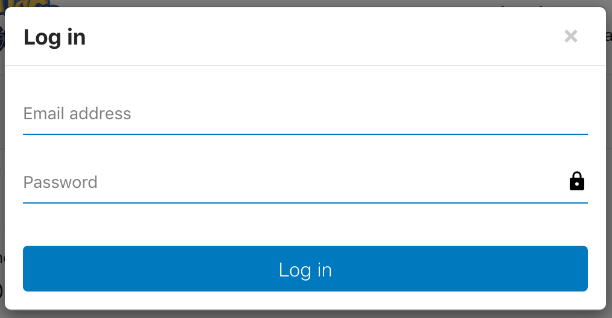
|
Log In
The password edit field MUST obscure the text entered so that it cannot be read, usually by replacing each character with a symbol such as the asterisk ("*") or a dot ("•"). The email address and the password edit fields MUST contain hints that describe the expected value, respectively "Email address" and "Password. Label : https://developer.mozilla.org/en-US/docs/Web/HTML/Element/label |
|
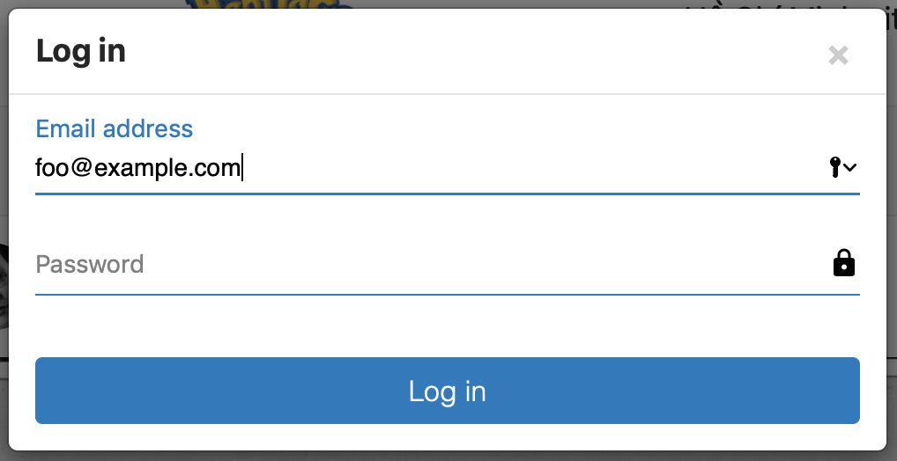
|
Waypoint 12: Display Placeholder Floating LabelsYou will use placeholders Placeholders: https://developer.mozilla.org/en-US/docs/Web/HTML/Element/input#Labels_and_placeholders Floating Label :https://css-tricks.com/float-labels-css/ Accessible CSS: https://medium.com/@eugeniolujambio/accessible-css-only-floating-labels-74bf9173bc5f |
|
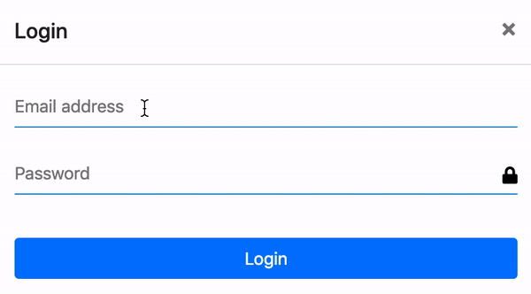
|
Waypoint 13: Toggle Password VisibilityHiding passwords visibility in forms helps protect from people looking over users shoulder and reading their password, but greatly increases in the likelihood that someone will enter the wrong one. We would like to allow our users to toggle password field text visibility on and off so that they have a quickly show if they have misspelt their password. |
|
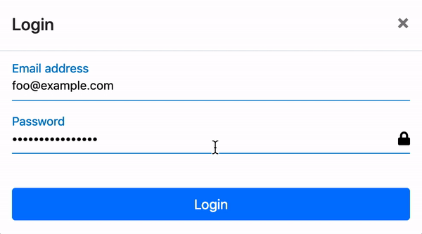
|
LogIn OperationsWhen a user clicks on the lock icon on the rightmost position of the
password edit field, you need to to change the password edit field’s
type from password to text. When the user clicks one more time on this lock icon, you need to switch this type back to Yeah, it’s really that simple! password: https://developer.mozilla.org/en-US/docs/Web/HTML/Element/input/password text: https://developer.mozilla.org/en-US/docs/Web/HTML/Element/input/text |
Waypoint 14: Design Photo Post LayoutThe Web page shows a feed of old photos of cultural and historical heritages collected and geolocated in the Heritage Observatory platform. The layout photo post is composed of:
Rephotography: https://en.wikipedia.org/wiki/Rephotography |
|
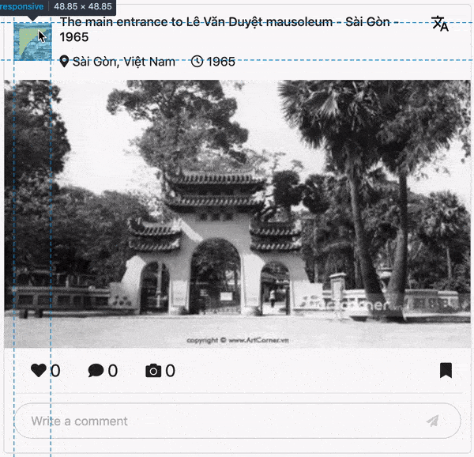
|
UpdateUpdate your HTML file mockup: https://en.m.wikipedia.org/wiki/Mockup |
Waypoint 15: Design Feed LayoutHéritage GO page displays a continuous feed of photographs of heritages that have been taken near the current location of the user. The most recent published photographs appear on the top of the feed. The user can vertically scroll down this feed to display photographs that were published earlier. Each photograph is vertically separated from another by a margin of 20 pixels. |

|
LayoutDefine the HTML layout of the photograph feed. |
Waypoint 16: Display a List of Photos when Loading the PageAsynchronous Programming OverviewWe have designed so far the graphical layout of a photograph post and the layout of the photograph feed. We need now to fill out the feed with photograph posts. The object For instance, the method All the methods that the object So what does the method return right away?! It returns an object. A Promise that represents the request being processed asynchronously. How
do you get the result once the request has been successfully processed?
The object Promise supports two methods. The method How does that work behind the scene? The object What AJAX allows you to do is just update parts of the DOM of a HTML webpage instead of having to reload the entire page. AJAX also lets you work asynchronously, meaning your code continues to run while that part of your webpage is trying to reload. Asynchronous: https://en.wikipedia.org/wiki/Asynchrony_(computer_programming) Promise: http://tinyurl.com/pezueno Promise-then: http://tinyurl.com/klh6gyl Promise-catch: http://tinyurl.com/p6g2urc AJAX: https://en.wikipedia.org/wiki/Ajax_(programming) XMLHttpRequest: https://developer.mozilla.org/en-US/docs/Web/API/XMLHttpRequest/Using_XMLHttpRequest Fetch a List of PhotographsHopefully, you don't need today to go into the details of > mHeritageGoService.getPhotos()
.then(photos => { console.log(photos); })
.catch(error => { console.log(error); });
Promise {<pending>}
(10) ["71dee8ee-f814-11e7-9de2-0007cb040bcc",
"37790ee0-16c4-11e8-9dee-0007cb040bcc",
"0e7012b4-16c4-11e8-9dee-0007cb040bcc",
"5dd294f8-16c4-11e8-9dee-0007cb040bcc",
"43b478ca-c2aa-11e7-9da9-0007cb040bcc",
"c4a9b14e-f814-11e7-9de2-0007cb040bcc",
"120e5432-f813-11e7-9de2-0007cb040bcc",
"fb83a1f4-6a41-11e7-9da2-0007cb040bcc",
"dd06abcc-f812-11e7-9de2-0007cb040bcc",
"2ea37e42-6a42-11e7-9da2-0007cb040bcc"]
You can limit the number of photographs to be returned by passing the attribute > mHeritageGoService.getPhotos({limit: 2})
.then(photos => { console.log(photos); })
.catch(error => { console.log(error); });
Promise {<pending>}
(2) ["dd06abcc-f812-11e7-9de2-0007cb040bcc",
"2ea37e42-6a42-11e7-9da2-0007cb040bcc"]
The method To retrieve details about one particular photo, you need to call the method > mHeritageGoService.getPhoto("71dee8ee-f814-11e7-9de2-0007cb040bcc")
.then(function (photo) { console.log(photo); })
.catch(function (error) { console.log(error); });
Promise {<pending>}
{image_url: "//cdn.heobs.org/photo/71dee8ee-f814-11e7-9de2-0007cb040bcc",
update_time: "2018-04-20T09:23:48.045+02:00",
inventory_number: "CC336",
orientation: "landscape",
title: Array(1), …}
This function returns an array of JavaScript objects. Each JavaScript object represents a photograph with the following attributes: {
"account": {
"account_id": string,
"fullname": string,
"picture_id": string,
"picture_url": string
},
"comment_count": integer,
"image_url": string,
"like_count": integer,
"photo_id": string,
"team": {
"name": string,
"picture_id": string,
"picture_url": string,
"team_id": string
},
"title": [
_label_
...
],
"view_count": integer
}
where:
The structure {
"content": string,
"locale": string
}
where:
Render Photograph PostsCreate a file <script src="js/main.js"></script> Edit your file Call the method WARNING: DO NOT GENERATE HTML CODE IN YOUR JAVASCRIPT CODE! That's ugly and hardly maintainable! You have already written the HTML code of a photograph post's layout in "Waypoint 14: Design Photo Post Layout". Just clone your HTML as many as the number of photographs, update the HTML elements' properties with the attributes of a each photograph, and add each the HTML root element of a photograph to the feed. Document Ready: https://learn.jquery.com/using-jquery-core/document-ready/ Clone: https://api.jquery.com/clone/ Prop: http://api.jquery.com/prop/ |
Waypoint 17: Auto Load more Photographs when Scroll downInfinite Scrolling is a web-design technique that loads content continuously as the user scrolls down the page. This is the way Instagram and [Twitter] works. Aza Raskin, the inventor of the infinite-scroll feature that allows you to endlessly scroll down websites, said: "It's as if they're taking behavioral cocaine and just sprinkling it all over your interface. And that's the thing that keeps you like coming back and back and back." Edit your file Indeed, you will then determine if the user scrolls close to the bottom of the feed, and you will automatically fetch more photographs to be rendered and add them to the feed. But how to fetch the data of the photographs that followed in the feed? The method JS event- scroll: https://api.jquery.com/scroll/ Browser Window: https://developer.mozilla.org/en-US/docs/Web/API/Window SQL: https://www.postgresql.org/docs/current/queries-limit.html For instance: > mHeritageGoService.getPhotos({
offset: 2,
limit: 5
})
.then(photos => { console.log(photos); })
.catch(error => { console.log(error); });
Promise {<pending>}
(10) ["0e7012b4-16c4-11e8-9dee-0007cb040bcc",
"5dd294f8-16c4-11e8-9dee-0007cb040bcc",
"43b478ca-c2aa-11e7-9da9-0007cb040bcc",
"c4a9b14e-f814-11e7-9de2-0007cb040bcc",
"120e5432-f813-11e7-9de2-0007cb040bcc"]
|
Waypoint 18: Blur Content scrolling below the Header (Bonus)We would like our users see the content of the photograph feed scroll behind the header of the web page. We basically want the header to be transparent with an opacity of 35%: opacity: https://developer.mozilla.org/en-US/docs/Web/CSS/opacity |
|
|
BlurHowever getting the header transparent as it doesn't provide a great visual result. It's actually quite confusing. The graphical and textual content of the feed conflicts with the content of the header. It catches way too much the user's attention. We need to blur the content of the feed that scrolls behind the header so that this content looks smoother, like a simple background image: blur: https://en.wikipedia.org/wiki/Gaussian_blur |

|
UpdateUpdate your HTML and CSS files to blur the content of the photograph feed that scrolls behind the header. |
Waypoint 19: Allow Users to Help in Translating Photograph CaptionsOverviewThe caption of a photograph is used to index this photograph to support full-text search queries. Full-text search allows users to find photographs by entering a list of words. For instance: "Saigon Cầu Mống". Full Text Search: https://en.wikipedia.org/wiki/Full-text_search |
|
|
CaptionThe problem is that the caption of most of the old photographs of this bridge is not written is Vietnamese, but in French with the initial French name of this bridge "Pont des Messageries Maritimes". |
|
|
CrowdsourcingTherefore there is more chance that old photographs of this bridge are indexed with the French name than the Vietnamese name. This is unfortunate because most of the people who are interested in this Saigon bridge are more likely Vietnamese! The caption of old photographs of this bridge, currently written in French, needs to be translated in Vietnamese. The Heritage Observatory platform supports multiple languages. The caption of a photograph can be written in as many languages as you want. A photograph can have its caption written in English, French, Vietnamese, etc.: {
"photo_id": "db3210cc-5c79-11e8-9e03-0007cb040bcc",
"title": [
{
"content": "Le Pont des Messageries Maritimes",
"locale": "fra"
},
{
"content": "Cầu Mống",
"locale": "vie"
},
{
"content": "Mong Bridge",
"locale": "eng"
}
]
}
The Heritage Observatory platform indexes a photograph in all the languages which the caption is written in. You probably understand a second language other than your native language. For instance, as a Vietnamese native speaker, you can more or less understand English too. You might not be able to efficiently translate Vietnamese to English, but you would easily translate English to Vietnamese, right? Hundreds of thousands of users would be able to translate the caption of photographs in many languages. That would allow any Internet users to search for photograph in every language. This is the basic principle of crowdsourcing the practice of engaging a "crowd" or group for a common goal, often innovation, problem solving. It provides many opportunities for nonprofits to tap the power of crowds. Crowdsourcing is a social movement, a mindset. We are going to allow our users to translate the caption of photographs whenever these users are able to help. A user can help in translating the caption of a photograph only if this caption is written in one language the user speaks, and when this caption is not currently available in one other language that this user speaks. For instance, let's say the caption of the previous photograph is available in French and English, and let's say you can speak English and Vietnamese. Because the caption of this photograph is available in a language you speak (English) and because this caption is not available in one other language you speak (Vietnamese), then you should be able to translate this caption in Vietnamese. Wouldn't you be able to translate the caption of the following photograph in Vietnamese, hu? Crowdsourcing: https://en.wikipedia.org/wiki/Crowdsourcing Importance of Crowdsourcing: https://www.entrepreneur.com/article/307438 |
|
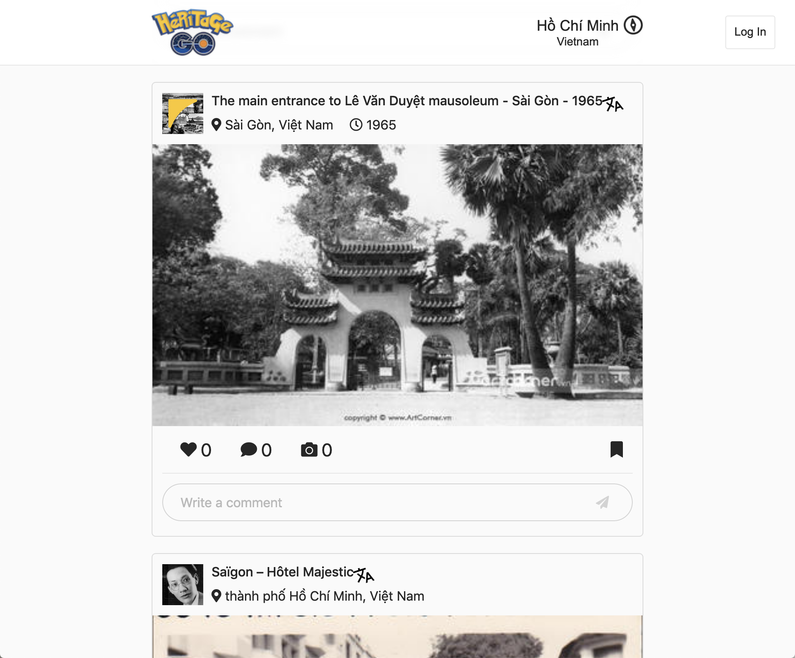
|
User's Preferred LanguagesHow can we know which languages the user speaks? This is actually defined in the preferences that the user has configured in his browser. For instance: |
|
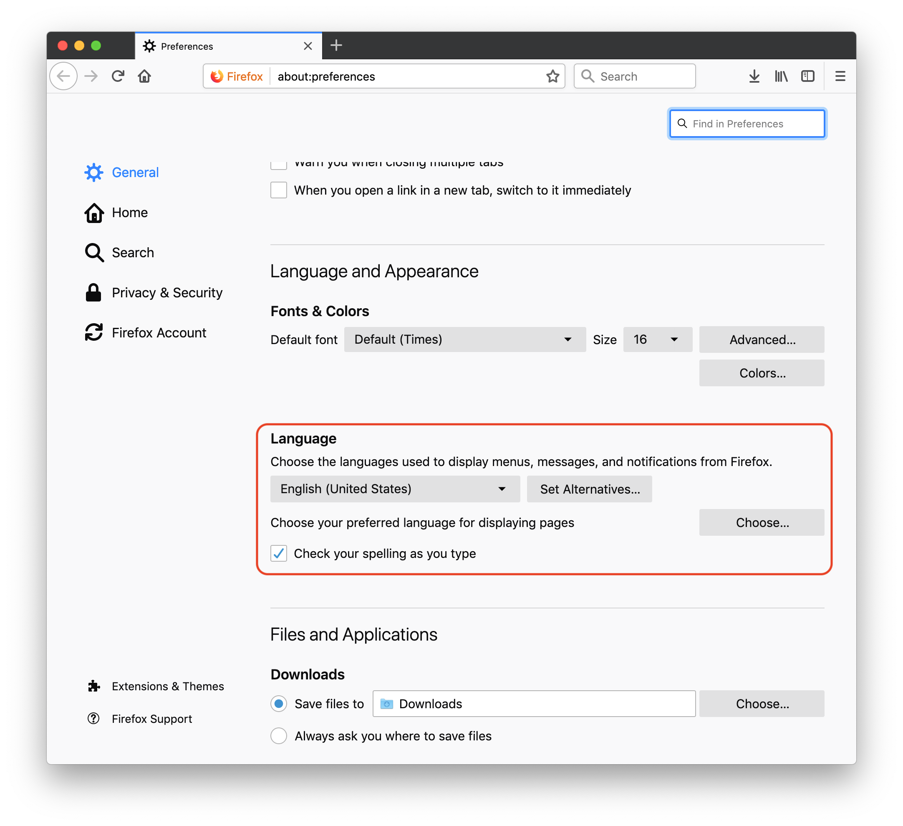
|
Choose LanguageThe user can choose several languages he speaks: |
|
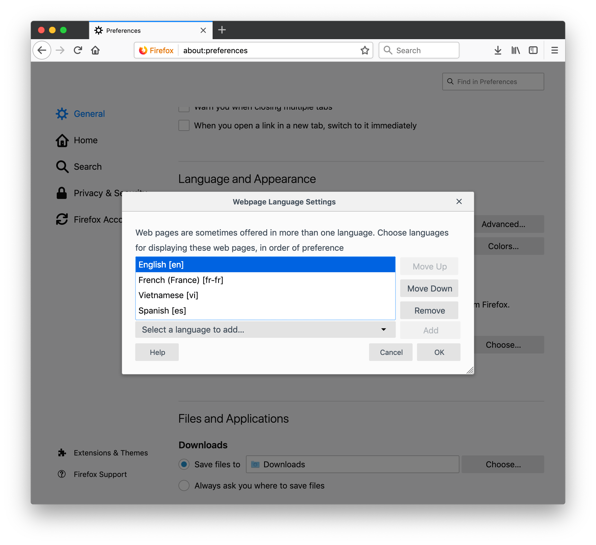
|
LanguageThe preferred languages of the user are available as the returned value of the read-only property Warning: the property We suggest you create a JavaScript object that represents a mapping between ISO 639 alpha-2 and ISO 639-3 alpha-3 codes. You can find the common list of ISO 639 codes in the Heritage Observatory Language ISO Codes sheet. This material is licensed under the terms of the Creative Commons Attribution 4.0 International (CC BY 4.0). For instance: // Conversion table from ISO 639 alpha-2 codes (ISO 639-1:2002) to
// equivalent ISO 639-3 alpha-3 codes (ISO 639-3:2007).
const ISO_639_ALPHA2_CODE_TO_ISO_639_ALPHA3_CODE_MAPPING = {
en: "eng",
fr: "fra",
vi: "vie",
...
};
NavigatorLanguage.languages: http://tinyurl.com/yynbc8z8 BCP47: https://tools.ietf.org/html/bcp47 ISO 639-3: https://en.wikipedia.org/wiki/ISO_639-3 Heritage Observatory – Language ISO Codes: http://tinyurl.com/y63odk96 global commons: https://creativecommons.org/licenses/by/4.0/ Requirements: Functional SpecificationsWhen the user clicks on the shaking translation icon of a photograph post, the web application allows the user to edit the caption of the photograph in one or more languages spoken by the user which is/are not currently available for the caption of this photograph. The web application replaces the translation icon with a dropdown list of these spoken languages. When the user selects one language in this list, the web application makes the photograph's caption editable. The user enters the translation of the caption for the selected language. When the the caption edit field lost the focus, or when the user presses the let photoId = /* the identification of the photograph */;
let caption = /* the suggested translation of the caption */;
let locale = /* the language this translation is written in */;
mHeritageGoService
.suggestPhotoCaption(photoId, caption, locale)
.catch(error => {
console.log(error);
});
If the user clicks outside the photograph post, or he starts scrolling the photograph feed, the web application disables the edition of the caption and it replaces the language dropdown list with the shaking icon. Element-blur: https://developer.mozilla.org/en-US/docs/Web/API/Element/blur_event Locale: https://en.wikipedia.org/wiki/Locale_(computer_software) Requirement: UI/UX SpecificationsDo as I say, not as I do.... The question you might be asking yourself is how to represent the languages in the dropdown list. This is both a User Interface (UI) and a User eXperience (UX). UI focuses on the look and layout of visual component, while UX focuses on how a feature works and how users easily understand and interact with it. Because the dropdown list will replace the translation icon, the size of this control component (widget) should to be as small as the translation icon image, to avoid drastic dynamic size change of components. We suggest you the not that good of an idea to use country flags to represent languages. That sounds quite natural, hu? Flag of Vietnam to represent Vietnamese language, flag of France to represent French language, and... 🤔... let's say flag of Great Britain to represent English language. We should be almost good. Don't waste your time in creating the conversion hash table between a language (ISO 639-1:2002) and its arbitrary corresponding country (ISO 3166-1 alpha-2). Here it is: {"aa":"DJ","af":"ZA","ak":"GH","sq":"AL","am":"ET","ar":"AA","hy":"AM",
"ay":"WH","az":"AZ","bm":"ML","be":"BY","bn":"BD","bi":"VU","bs":"BA",
"bg":"BG","my":"MM","ca":"AD","zh":"CN","hr":"HR","cs":"CZ","da":"DK",
"dv":"MV","nl":"NL","dz":"BT","en":"GB","et":"EE","ee":"EW","fj":"FJ",
"fil":"PH","fi":"FI","fr":"FR","ff":"FF","gaa":"GH","ka":"GE","de":"DE",
"el":"GR","gn":"GX","gu":"IN","ht":"HT","ha":"HA","he":"IL","hi":"IN",
"ho":"PG","hu":"HU","is":"IS","ig":"NG","id":"ID","ga":"IE","it":"IT",
"ja":"JP","kr":"NE","kk":"KZ","km":"KH","kmb":"AO","rw":"RW","kg":"CG",
"ko":"KR","kj":"AO","ku":"IQ","ky":"KG","lo":"LA","la":"VA","lv":"LV",
"ln":"CG","lt":"LT","lu":"CD","lb":"LU","mk":"MK","mg":"MG","ms":"MY",
"mt":"MT","mi":"NZ","mh":"MH","mn":"MN","mos":"BF","ne":"NP","nd":"ZW",
"nso":"ZA","no":"NO","nb":"NO","nn":"NO","ny":"MW","pap":"AW","ps":"AF",
"fa":"IR","pl":"PL","pt":"PT","pa":"IN","qu":"WH","ro":"RO","rm":"CH",
"rn":"BI","ru":"RU","sg":"CF","sr":"RS","srr":"SN","sn":"ZW","si":"LK",
"sk":"SK","sl":"SI","so":"SO","snk":"SN","nr":"ZA","st":"LS","es":"ES",
"sw":"SW","ss":"SZ","sv":"SE","tl":"PH","tg":"TJ","ta":"LK","te":"IN",
"tet":"TL","th":"TH","ti":"ER","tpi":"PG","ts":"ZA","tn":"BW","tr":"TR",
"tk":"TM","uk":"UA","umb":"AO","ur":"PK","uz":"UZ","ve":"ZA","vi":"VN",
"cy":"GB","wo":"SN","xh":"ZA","yo":"YO","zu":"ZA"}
When the user clicks on the translation icon, the web application stops the shaking animation of the translation icon, and displays a dropdown list of flags that represent that languages for which the user should be able to translate the photo's caption in. UI/UX: http://tinyurl.com/y2qkh4hr Widget: https://en.wikipedia.org/wiki/Widget_(GUI) ISO 639-1: https://en.wikipedia.org/wiki/List_of_ISO_639-1_codes ISO 3166-1: https://en.wikipedia.org/wiki/ISO_3166-1_alpha-2 |
|
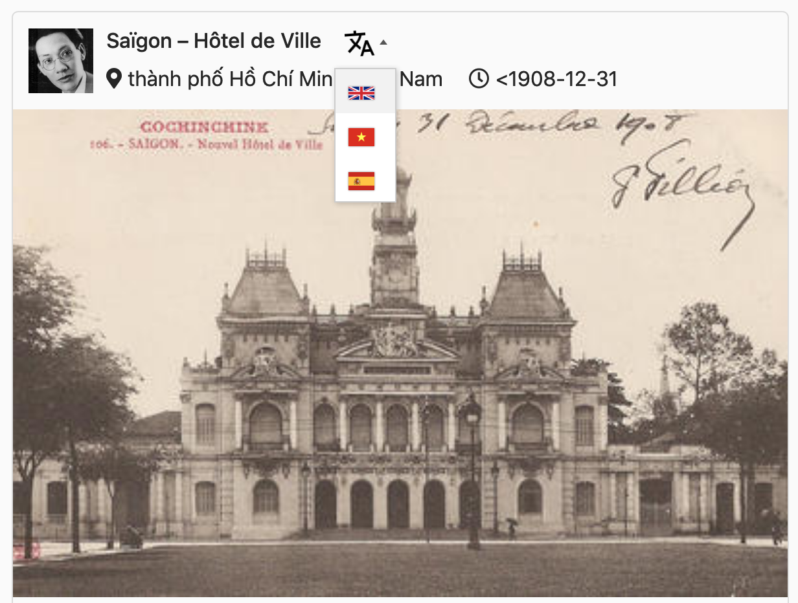
|
Change LanguageWhen the user clicks on a flag, the web application lets the user enter the translation of the photo's caption in the selected language. |
|
|
Waypoint 20: Improve UX for Translating Photograph CaptionsIt's actually a bad idea to use a country flag to represent a language. Country flags are not languages. Canada is a country. Canadian is not a language. English and French are the official languages of Canada. French is the or one of the official languages of numerous countries. France is probably not the main country who is leading the Francophonie movement the most. Why France should be the best representation for the French language? Would Belgium people easily accept to click on the flag of France to indicate that they speak French? You are going to hurt their feeling! 😆 Don't use flags to indicates languages! Suggest another UI design to allow users to select the languages they speak and for which they can provide a translation of the caption of a photo. Flags: http://www.flagsarenotlanguages.com/blog/ French Speaking Countries: http://tinyurl.com/osr6mp5 Flag Usage: https://www.w3.org/International/questions/qa-link-lang#flags |